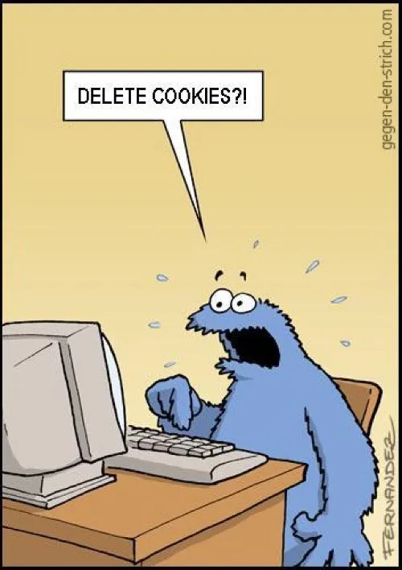

Wat leuk dat je wat wil leren via mijn website, op deze website zal je informatie vinden over onder andere het drielagenmodel, het moederbord, user-interfaces, de logische laag, de CPU, randapparatuur en nog heel veel meer! Heel veel leer plezier!
